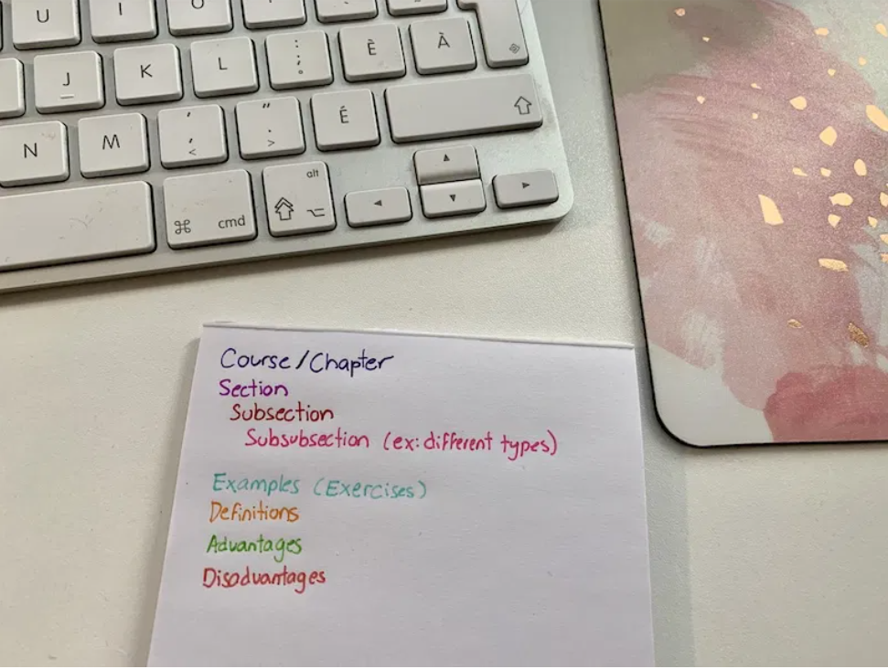

How to Make the Perfect Cheat Sheet
I am regularly asked about how I make cheat sheets (allowed reference sheet) for the exams and quizzes that I have at my university. In this blog post, I will show you how I do it! I will give you all the advice that I have so that you’re able to make cheat sheets like mine.I started making these sheets when I started university, and every single sheet that I have been making for the past 3 years has improved my technique! This article contains affiliate links. This doesn’t cost you anything, but I can earn a small commission if you buy something or sign up on a website. This helps me to maintain the blog.
Materials you need
-Staedler Triplus Fineliner Pens -15 cm ruler -30 cm ruler -Blank white paper : preferably thicker, so that it is not clear and you do not see through it -Erasable .5 mm pen: when I have to write a lot of text and have little space, I take .5 mm -Erasable .7 mm pen : I find that the ink of .7 mm is darker and it is more beautiful on the sheet -Retractable eraser: since one writes small, having an eraser like this one allows being more precise when one wants to erase -Mechanical pencil with color leads: Sometimes I like to use a pencil with a lead of color, as it can be erased very well but it is colorful to identify certain things. It’s useful when we’re not 100% sure!
Steps to make the perfect cheat sheet or reference sheet
1- Draw a line at the top of the sheet and write in your contact information
2- Draw the columns on both sides of the sheet
3- Decide on your color code
Tip for Math or Physics Cheat Sheets
Over time, I realized that solving exercises in math and physics is often a bunch of repeated steps with certain formulas that we need to follow. So when it’s applicable, I always make a list of steps for solving typical exercises, which I write on my sheet. Then, I put an exercise with a certain peculiarity, and I will also number all the resolution steps of the example. Therefore, it’s clear to me during the exam what steps I need to follow and in which order.
Is it better to write all the theory with very small handwriting or just the main points?
It depends on you. For my part, I prefer to write the whole theory when it comes to “textual” courses. In the exams, there are small details that are required and we all must know. Writing in a small font allows me to have more theory on the sheet. Also, even if I am to write with a smaller handwriting, I am used to it and I can read the information well. By doing this I generally manage to get all the theory of my courses, which often consist of more than 100 PowerPoint slides, onto my sheets! On the other hand, if it is for mathematics or physics, then I often write the main points that I need to know, although these generally cover the whole theory as well.
How long does it take?
My cheat sheets take me between 6 and 9 hours to make, sometimes even 11 hours. In general, it takes me 1 hour per column on a sheet. You have to be careful because you can hurt your neck by working so long with your head bent over as you write. So I try to make my cheat sheets over the span of 2 or 3 days when possible!
Does it help me learn theory faster / better?
When I start working on my cheat sheets, it is because I did the exercises suggested by the teacher. I am at a stage where I understand the subject (or I think I do). Of course, making these sheets confirms my learning, but the purpose isn’t to help me understand better. This has already been done earlier.
Why do I do them on paper?
Most teachers do not want us to use computer-generated note sheets, so we have to do it by hand. When allowed however, I do it on the computer as it’s much faster. For courses like maths or physics, I still prefer to make them by hand. Writing formulas and drawings on paper is easier for me.
How do I write so small?
I think this secret lies in the practice and size of the pen used! That’s why I use .5 and .7 mm pens. You can write smaller with needle-type pens.
Do I use them after the exam?
Yes, very often. As I had 5-6 courses in mathematics and physics, the subject often intersects with old topics. So I use past sheets of notes to understand the new theory. I keep my cheat sheets organized and classified to remind myself of the theory a few years later. In my opinion, they are a good summary of a subject.